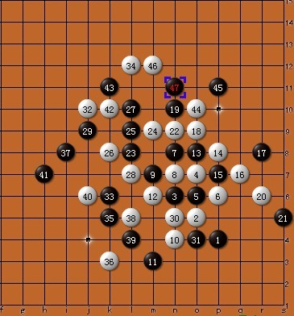

【无禁】白先如何胜
首页
习题专区
#1 【无禁】白先如何胜 作者：蓝天蓝 发表时间：2011-8-12 22:46:33
白先如何胜

［此帖子已被 小红眼镜 在 2013-9-23 9:26:39 编辑过］
#2 Re:白先如何胜 作者：陨落之城 发表时间：2011-8-12 22:58:43
=======上图对应的爱五子棋谱代码如下，以便你拆解：========
l4k5j6k7k6l6j8j7i7j4i3i6k8l8l7m7n8k9j10n6o5j9h8i9h9g8h10h7f9j5k4f10g6h12g5g3e8h5h4f6d7g10g11k10l11i12j11k12j12m9l9m11
======================================================
#3 Re:白先如何胜 作者：满月 发表时间：2011-8-13 10:29:05
［此帖子已被 满月 在 2011-8-13 10:38:46 编辑过］
#4 Re:白先如何胜 作者：满月 发表时间：2011-8-13 10:42:53
我就说怎么发不了谱，连表情也没有，原来是chrome的原因。